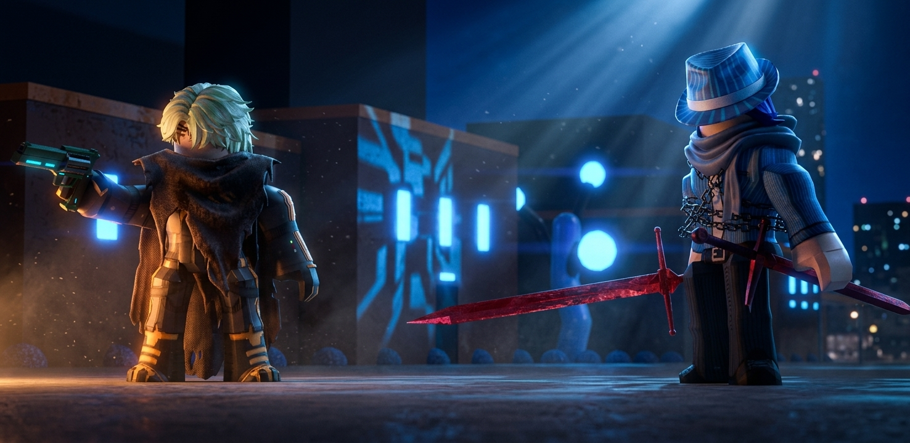

Beneath The Stormy Seas — Chapters 1–5

Chapter 1 — Infiltration of the Dreadnought
Beneath the tempestuous skies of the Varkuun sector, a massive Vexx Empire Dreadnought hovered low, shielding its black-market cargo. Leaving Tom, Kole, and the remaining Guardians to hold the perimeter, Ral Awakening and Angelo Pierce breached the starboard hull alone.
Ral drew his Crimson Fear Sword, its intense red astral energy pulsating in rhythm with his heartbeat. Beside him, Angelo pulled his heavy Cyber Revolver, the neon-cyan coils along the barrel humming as they charged with lethal plasma.
Angelo: “No alarms. No survivors. We wipe this vessel off the grid before they broadcast our location.”
Ral: “Lead the way.”
Chapter 2 — The Corridor Sweep
The inner halls of the Dreadnought turned into a total slaughterhouse. Vexx soldiers flooded the narrow corridors, but none could withstand the duo’s overwhelming force.
Ral carved through heavy armor plating with effortless, brutal precision. His Crimson Fear blade left glowing red arcs in the air, cleaving through Vexx infantry before they could fire a single blast. Synchronized with Ral’s movement, Angelo fired his Cyber Revolver with lethal accuracy—shattering visors, blowing out power cores, and headshotting elite officers with instant, brutal executions.
Every room was cleared within seconds, leaving broken Vexx squads scattered in their wake.
Chapter 3 — Royal Observation
Aboard the Guardian command shuttle overhead, Princess Anuket Nebet-Hut monitored the interior feed through Angelo's tactical feed. Her eyes remained locked onto Ral Awakening as he swept through the enemy lines.
Seeing an Aetherian wield a sacred royal weapon of Varkuun—not just holding it, but mastering its power with raw confidence and fluidity—left her stunned.
A faint blush flushed across Anuket’s cheeks as she watched Ral handle the Crimson Fear blade with effortless skill, her warrior composure melting further into genuine fascination and affection.
Anuket: (Whispering to herself) “He channels the crimson flame better than our finest generals... How is that possible?”
Chapter 4 — Dismantling the Smuggle
Reaching the primary cargo bay, Ral and Angelo stood before crates packed with stolen astral artifacts. Angelo stepped up to the main manifest terminal, plugging in his wrist interface to assess the Vexx Empire's black-market network.
Angelo: “They weren't just hoarding these. They were preparing to auction the Crimson Fear Arsenal to syndicate buyers across the galaxy.”
Using his expert technical knowledge, Angelo completely dismantled their logistical grid, overriding the automated vaults, wiping the encrypted buyer logs, and locking down every stolen weapon crate.
Chapter 5 — Securing the Arsenal
With the Vexx crew entirely wiped out and the smuggling operation dismantled, Ral sheathed his glowing Crimson Fear Sword, wiping metallic dust from his armor.
Angelo pinged the command shuttle for extraction and extra transport units to secure the cargo.
Angelo: “Smuggling ring erased. Cargo secured. Tell Anuket her royal vault is coming back home.”
On the shuttle screen, Anuket looked away quickly to hide her expression, composed once more—though her admiration for the Crimson Swordsman was stronger than ever.
End of Chapters 1–5
With the Dreadnought cleared and the Vexx smuggling network dismantled, Ral and Angelo secure the stolen Crimson Fear Arsenal, solidifying the bond between the Guardians and Varkuun royalty.